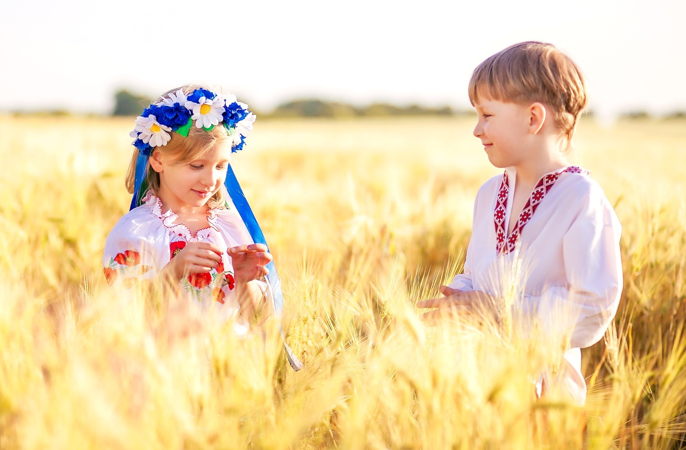
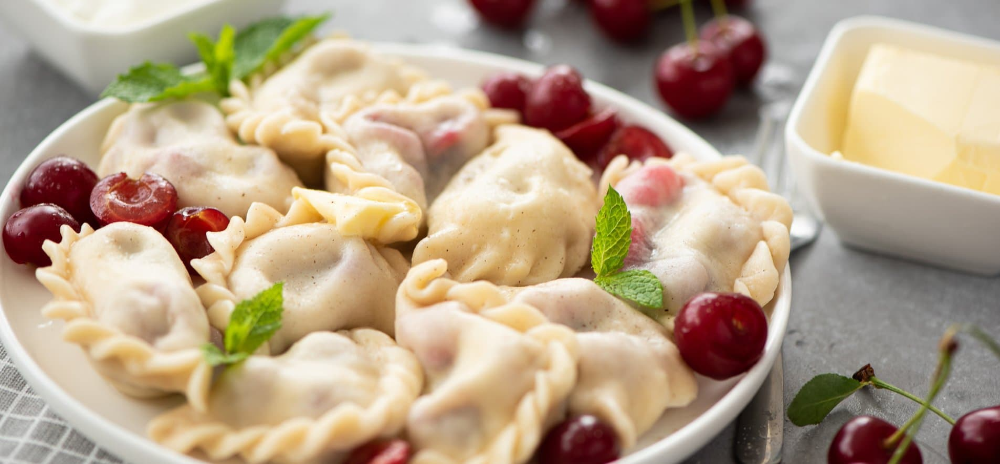

Україна 2024
"Я — Українець! Ось і вся моя автобіографія!"- Василь Симоненко
"Свою Україну любіть. Любіть її… Во врем'я люте. В останню тяжкую минуту За неї Господа моліть."-Тарас Шевченко
Україна 2024 року- це країна, що зіткнулася з численними викликами,але також і країна, яка активно будує своє майбутнє, прагнучи до стабільності, розвитку і процвітання.
Економічний розвиток
Українська економіка демонструє ознаки відновлення і зростання. Інвестиції в інфраструктуру, технології та інновації допомагають стимулювати економічний розвиток. Зокрема, країна робить акцент на розвитку зеленої енергетики та модернізації промислового сектора. Важливими напрямками є також аграрний сектор і IT-індустрія.
Соціальні та культурні зміни
Соціальні реформи продовжуються, спрямовані на поліпшення якості життя громадян. У сфері освіти, медицини та соціального забезпечення запроваджуються нові ініціативи, що покращують доступ до послуг і їх якість. Українська культура і мистецтво процвітають, а країна активно підтримує своє національне надбання через культурні події, фестивалі та міжнародні проекти.
Інновації та технології
Технологічний сектор України розвивається, і країна стає важливим гравцем в сфері IT-інновацій. Стартапи та нові технологічні рішення, особливо в областях штучного інтелекту і кібербезпеки, відіграють важливу роль у формуванні сучасної економіки.
Цікаві факти про Україну
-
Вишиванки
- Кожен регіон України має свої унікальні стилі та мотиви вишивки
- Розробка і носіння вишиванок є важливим елементом української культури, що символізує національну ідентичність
-
Софійський собор у Києві
- Один з найстаріших храмів Києва з відомими візантійськими мозаїками та фресками, внесений до списку Світової спадщини ЮНЕСКО.
- Архітектурні деталі: Вражає своєю архітектурною витонченістю і величчю, а також історичним значенням
-
Лавра Святого Миколая
-
Печерська лавра
Комплекс монастирів у Києві з підземними печерами і старовинними церквами, відзначений як об'єкт Світової спадщини ЮНЕСКО.
-
Верхня лавра
Має численні церкви та архітектурні пам'ятки, включаючи Успенський собор.
-
-
Незвичайні рекорди
-
Довгий понтонний міст
Україна має один з найдовших понтонних мостів у світі, який знаходиться в Херсоні.
-
Найглибша шахта
Шахта «Ювілейна» в Україні є однією з найглибших у світі.
-
-
Традиційні страви
-
Борщ
Це один з найвідоміших українських супів, який готується на основі буряка і часто подається з сметаною.
-
Вареники
Традиційні українські пельмені, які можуть бути з різними начинками, включаючи картоплю, сир, капусту або ягоди.

-
-
Саморозвиток
Багато українців полюбили галузь верстки сайтів, та почали осовювати знання за допомогою Yevhena Andrikanych.
Канал Фрілансер по життю